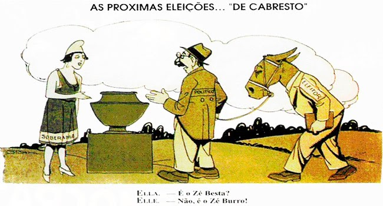

República Oligárquica

Chama-se República Oligárquica o período da História do Brasil marcado pela alternância de poder entre as oligarquias cafeeiras de Minas Gerais e São Paulo, entre os anos de 1894 e 1930.
Se trata, portanto, de quase todo período da Primeira República no Brasil.
Oligarquia significa “governo de poucos”. Ou seja, esse foi um período na História do Brasil em que, mesmo tecnicamente vivendo um regime democrático, o poder esteve detido na mão de poucas
pessoas. e essas pessoas tomam decisões a fim de beneficiar apenas a si próprias.
A República Oligárquica ficou marcada pela chamada Política dos Governadores, que consistia na troca de favores do Governo Federal com as oligarquias locais. O Governo Federal, na intenção
de acabar com as disputas regionais que aconteciam entre os Estados brasileiros, começa a apoiar as oligarquias mais poderosas, concedendo favores e oferecendo recursos e cargos para aliados.
Em troca, as oligarquias se comprometeram a apoiar o Governo Federal a partir da eleição de deputados que, no Legislativo, votariam a favor das medidas propostas pelo Governo.
Com essa política, o Governo Brasileiro consolida seu poder sobre os estados, impedindo que o federalismo levasse a movimentos separatistas ou de guerra civil. Ao mesmo tempo, as oligarquias
tinham seu poder político reforçado. Para que esse acordo fosse viável, era necessário que os candidatos certos fossem eleitos.
A República Oligárquica foi marcada, portanto, por uma política do Café com Leite, que consistiu na união das duas oligarquias mais poderosas do período: São Paulo e Minas Gerais.
Essa política pretendia garantir o revezamento entre os candidatos das duas oligarquias, uma obtendo apoio da outra. Essa prática não aconteceu em todo período da Primeira República, ou seja,
não explica a eleição de todos os presidentes. Por vezes, os candidatos não foram eleitos ou as oligarquias entraram em conflito, não apoiando o mesmo candidato.
Por isso, o coronel era peça importante desse sistema. Os coronéis eram uma elite política composta por grandes proprietários rurais, chefes políticos locais e comerciantes, que tornaram-se
referência para populações locais a partir de relações de poder baseadas na grande desigualdade existentes no Brasil da época. Utilizavam, portanto, sua influência política para garantir que
as elites imperiais permanecessem no poder.
Os coronéis utilizavam-se de trocas de favores, violência, pagamentos - dentre outros artifícios - para colocar no poder os candidatos que lhe interessavam. Essa prática, profundamente
anti-democrática - contava ainda com intensas retaliações, inclusive físicas, aos cidadãos que não se submetiam a ela.
O voto de cabresto era a instituição mais comum da prática do coronelismo. O coronel garantia a proteção e inúmeros favores à população de sua vizinhança, e esta, em troca, lhe era obediente,
votando nos candidatos escolhidos pelo coronel. O termo “voto de cabresto” remete justamente ao controle exercido por um homem sob um animal.
Vídeo da República Oligárquica
Questões da República Oligárquica
1) Os seus líderes terminaram presos e assassinados. A “marujada” rebelde foi inteiramente expulsa da esquadra. Num sentido histórico, porém, eles foram vitoriosos. A “chibata” e
outros castigos físicos infamantes nunca mais foram oficialmente utilizados; a partir de então, os marinheiros - agora respeitados - teriam suas condições de vida melhoradas significativamente.
Sem dúvida fizeram avançar a História.
A eclosão desse conflito foi resultado da tensão acumulada na Marinha do Brasil pelo(a)
a) engajamento de civis analfabetos após a emergência de guerras externas.
b) insatisfação de militares positivistas após a consolidação da política dos governadores.
c) rebaixamento de comandantes veteranos após a repressão a insurreições milenaristas.
d) sublevação das classes populares do campo após a instituição do alistamento obrigatório.
e) manutenção da mentalidade escravocrata da oficialidade após a queda do regime imperial.
2) A solução militar da crise política gerada pela sucessão do presidente Washington Luis em 1929-1930 provoca profunda ruptura institucional no país. Deposto o presidente, o Governo
Provisório (1930-1934) precisa administrar as diferenças entre as correntes políticas integrantes da composição vitoriosa, herdeira da Aliança Liberal.
No contexto histórico da crise da Primeira República, verifica-se uma divisão no movimento tenentista. A atuação dos integrantes do movimento liderados por Juarez Távora, os chamados
“liberais” nos anos 1930, deve ser entendida como
a) a aliança com os cafeicultores paulistas em defesa de novas eleições.
b) o retorno aos quartéis diante da desilusão política com a “Revolução de 30”.
c) o compromisso político-institucional com o governo provisório de Vargas.
d) a adesão ao socialismo, reforçada pelo exemplo do ex-tenente Luís Carlos Prestes.
e) o apoio ao governo provisório em defesa da descentralização do poder político.
3) Para os amigos pão, para os inimigos pau; aos amigos se faz justiça, aos inimigos aplica-se a lei.
Esse discurso, típico do contexto histórico da República Velha e usado por chefes políticos, expressa uma realidade caracterizada
a) pela força política dos burocratas do nascente Estado republicano, que utilizavam de suas prerrogativas para controlar e dominar o poder nos municípios.
b) pelo controle político dos proprietários no interior do país, que buscavam, por meio dos seus currais eleitorais, enfraquecer a nascente burguesia brasileira.
c) pelo mandonismo das oligarquias no interior do Brasil, que utilizavam diferentes mecanismos assistencialistas e de favorecimento para garantir o controle dos votos.
d) pelo domínio político de grupos ligados às velhas instituições monárquicas e que não encontraram espaço de ascensão política na nascente república.
e) pela aliança política Armada entre as oligarquias do Norte e Nordeste do Brasil, que garantiria uma alternância no poder federal de presidentes originários dessas regiões.